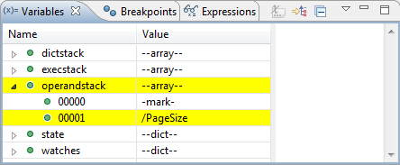

The Variables View is part of the Debug Perspective. It displays information about the variables associated with the stack frame selected in the Debug View. You can expand the stacks and the state of the PostScript interpreter. Changes since the previous step are displayed in highlight color.
